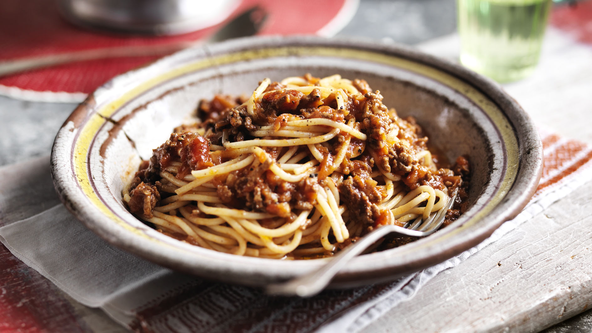

Spaghetti Bolognese

Ingredients:
Onion and garlic
Olive oil, salt and pepper
Spaghetti
Bolognese sauce
Mince (I reccomend beef, but pork works too)
Cheddar cheese
Method:
- Begin by bringing some water to the boil in a saucepan according to the instructions on the packet
- Once boiling, add a pinch of salt and the spaghetti
- In a frying pan, heat some oil on a medium heat
- Once hot, add the onion and garlic (being careful not to burn the shit out of the garlic) and sprinkle on some salt and pepper
- After a couple of minutes, add the mince and fry until browned
- Once the mince has browned, add the red sauce to pan and simmer for 5-10 minutes on a lower heat
- Once both the spaghetti and bolognese sauce are done, combine in a bowl and sprinkle on some grated cheese
- VOILA! You are done!
Back to home
Back to top